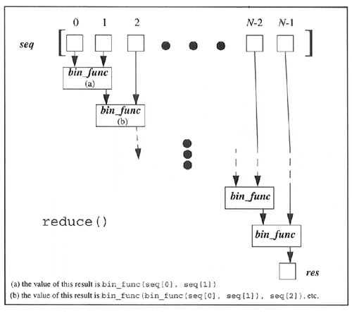

| < BACK | Make Note | Bookmark | CONTINUE > |
reduce()
The final functional programming piece is reduce(), which takes a binary function (a function that takes two values, performs some calculation and returns one value as output), a sequence, and an optional initializer, and methodologically "reduces" the contents of that list down to a single value, hence its name.
It does this by taking the first two elements of the sequence and passing them to the binary function to obtain a single value. It then takes this value and the next item of the sequence to get yet another value, and so on until the sequence is exhausted and one final value is computed.
You may try to visualize reduce() as the following equivalence example:
reduce(func, [1, 2, 3]) = func(func(1, 2), 3)
Some argue that the "proper functional" use of reduce() requires only one item to be taken at a time for reduce(). In our first iteration above, we took two items because we did not have a "result" from the previous values (because we did not have any previous values). This is where the optional initializer comes in. If the initializer is given, then the first iteration is performed on the initializer and the first item of the sequence, and follows normally from there.
If we were to try to implement reduce() in pure Python, it might look something like this:
def reduce(bin_func, seq, init=None):
lseq = list(seq) # convert to list
if init == None: # initializer?
res = lseq.pop(0) # no
else:
res = init # yes
for item in lseq: # reduce sequence
res = bin_func(res, item) # apply function
return res # return result
This may be the most difficult of the four conceptually, so we should again show you an example as well as a functional diagram (see Figure11-4). The "hello world" of reduce() is its use of a simple addition function or its lambda equivalent seen earlier in this chapter:
Figure 11-4. How the reduce() Built-in Function Works
• def sum(x,y): return x,y • lambda x,y: x+y
Given a list, we can get the sum of all the values by simply creating a loop, iteratively going through the list, adding the current element to a running subtotal, and be presented with the result once the loop has completed:
allNums = range(5) # [0, 1, 2, 3, 4]
total = 0
for eachNum in allNums:
total = sum(total, eachNum) # total = total + eachNum
print 'the total is:', total
Making this code real in the interpreter looks like this:
>>> def sum(x,y): return x+y >>> allNums = range(5) >>> total = 0 >>> for eachNum in allNums: ... total = sum(total, eachNum) ... >>> print 'the total is:' total the total is: 10
Using a lambda function, we argue that we can accomplish the same task on a single line using reduce():
>>> print 'the total is:', reduce((lambda x,y: x+y), range(5)) the total is: 10
The reduce() function performs the following mathematical operations given the input above:
((0 + 1) + 2) + 3) + 4)? 10
It takes the first two elements of the list (0 and 1), calls sum() to get 1, then calls sum() again with that result and the next item 2, gets the result from that, pairs it with the next item 3 and calls sum(), and finally takes the entire subtotal and calls sum() with 4 to obtain 10, which is the final return value.
| Last updated on 9/14/2001 Core Python Programming, © 2002 Prentice Hall PTR |
| < BACK | Make Note | Bookmark | CONTINUE > |